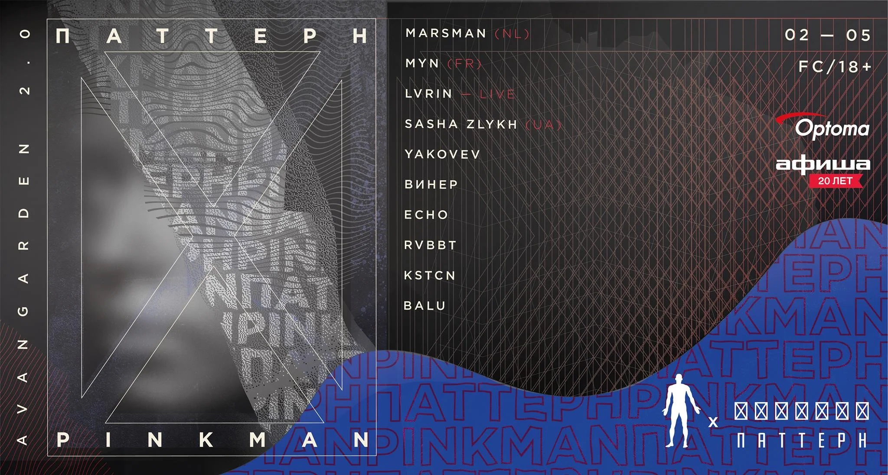
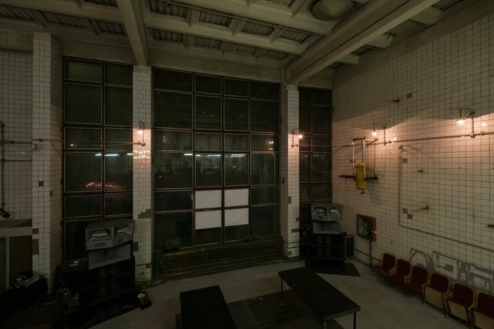
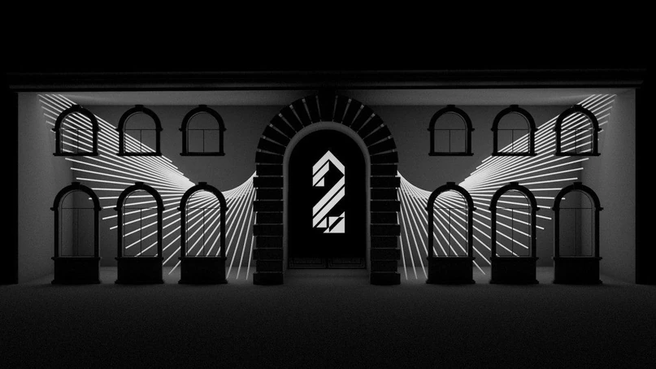
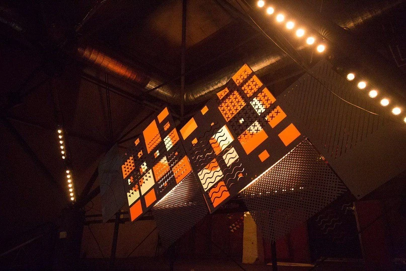
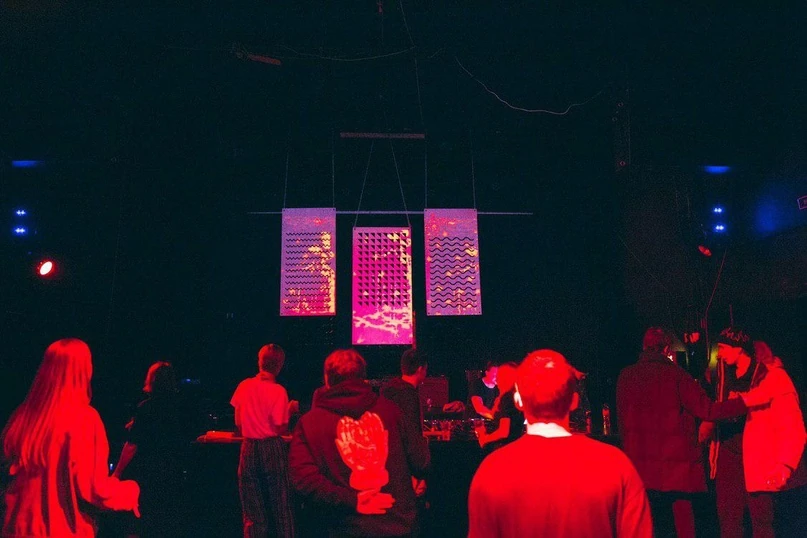

Нагрянули праздники — самое время лихо отдохнуть, заглянув на какую-нибудь интересную тусовку. Наш вариант — вечеринка «Паттерн х Pinkman», которая пройдет 2 мая в Avangarden. На мероприятии отметятся разномастные диджеи (как иностранные, так и отечественные).

Для того чтобы у вас была возможность выбора, организаторы подготовили две сцены, на каждой будет транслироваться собственное звучание и бодрая визуалочка. На главной сцене засветятся Marsman, Myn, LVRIN, на второй — Sasha Zlykh, Yakovev, Винер, Echo, Rvbbt и другие задорные ребята. Чтобы можно было не только слушать, но и наблюдать за происходящим с интересом, вовсю расстараются художники Temova, Сергей Зырянов и Павел Щелконогов: у них в рукавах прячутся хитроумные световые решения, изощренный проекционный мэппинг и идеи всяческих инсталляций.
Кстати, с дизайнером и видеохудожником Машей Темовой мы перебросились парочкой слов — поболтали о том, как на вечеринках создаются настроение, атмосфера и прочая магия.
Как давно ты занимаешься аудиовизуальным искусством и конкретно — видеомэппингом?
Вообще, анимацией и 3D-графикой занимаюсь лет десять, виджеить начала еще раньше, с 2005 года. То есть уже 14 лет.
Как рождаются идеи? Чем вдохновляешься?
Как правило, изначально вдохновляюсь пространством, где будет проходить мероприятие. Фактуры, свет, общее настроение локации, люди, какая-то предыстория площадки, возможно. Потом думаю о заданной тематике мероприятия: если это большой рейв — выходит один вектор, если что-то более камерное — другой.
Куда идти учиться тем, кто хочет виджеить?
Всегда говорю, что круче и эффективнее всего учиться «в полях», то есть непосредственно на площадке, где проходит ивент. Каждое мероприятие тебе что-то дает, это бесконечный процесс. И только в самой гуще событий понятны все нюансы. Прикидываешь, как в будущем можно сделать еще лучше. Я в целом за самообучение и за «насмотренность». Есть туториалы, простые курсы, чтобы понять основы, коллеги по цеху со своими проектами.
Расскажи про парочку своих важных, любимых работ.
Инсталляция для вечеринки ФINISTICA — огромный ловец снов, внутрь которого зашито изображение финиста — символа вечеринки. С помощью света он обретает контуры и взаимодействует с паутиной, в которую заключен.
Мэппинг окон клуба Pluton — привычным всем стеклянным фасадам я придала новый смысл. Объемное исполнение в виде ячеек позволяло взглянуть на огромное полотно по-новому, раскрывая объем и создавая дополнительное пространство. Все — с помощью света проектора.

Световая инсталляция для клуба Rodnya. Главным символом клуба был ромб, он и взят за основу работы. В моей версии он обретал новые перспективы, впадая в трехмерное пространство. В центре композиции находился диджей — как главный виновник торжества.
3D-мэппинг для балета Swan Lake. Ключевую роль имел фасад здания. По моей задумке, с помощью света границы расширяются, стены — исчезают, а пространство обретает новые просторы для визуализации представления.

Инсталляции для вечеринок «Паттерн» — конструкции из повторяющихся форм, обыгрывающих концепцию мероприятия. Суть всей задумки в том, чтобы приводить формы в движение, основываясь на ритме музыки.


Для вечеринки «Паттерн x Pinkman» мы с Павлом Щелконоговым создаем новую инсталляцию: концепция лежит в «оживлении» скрытых нитей функционирования человека — сосудов. Воссозданные абстрактные линии, переплетающиеся в человеческом теле, обретут жизнь и связь с танцполом. Который, в свою очередь, полностью сфокусирован на теме «просвета» человеческого тела: рентгеновские снимки, яркие вспышки.